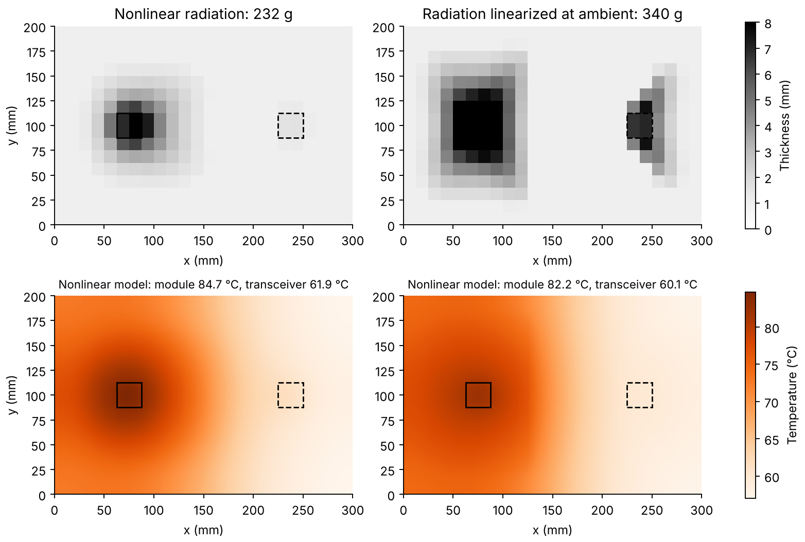
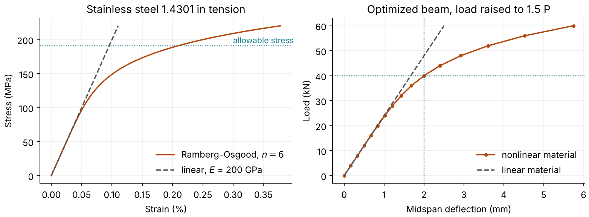

Project 4: A Compliant Gripper Designed with the Project 1 Code and a Large-Displacement Solver
Kangzheng Liu · OptiForge · MAE 598/494 Design Optimization
Official brief: Project 4: PDE-Constrained Design Optimization
Structure: compliant gripper, material layout in 2D (from the menu) · Nonlinear component: N2, large deformation · Code: repository
Summary
A compliant gripper is one piece of material with no pins or sliding joints. An actuator pushes on one side, the piece bends, and two jaws close on an object. The design question is where to put material so that the jaws move as far as possible.
The gripper is on the course menu, and it is close to what I did in Projects 1 to 3: a material layout in 2D elasticity, found with SIMP. I built it on my Project 1 code. The mesh numbering, the element matrix and the density filter are imported from top88.py. Compared with Project 1, the objective is a motion instead of a stiffness, the displacements are large enough that equilibrium is nonlinear and has to be solved by Newton's method, and there are limits on the stress and on the actuator stroke.
The gripper is 100 × 100 × 5 mm, made of polypropylene, and driven by 20 N. There are 1,800 design variables, one density per element.
- The optimized gripper closes each jaw by 3.86 mm for an actuator stroke of 5.00 mm. The stroke and the stress are at their limits of 5 mm and 22.7 MPa. It uses 19% of the design area, where 30% was allowed.
- The layout optimized with linear analysis is predicted to close by 4.05 mm. With large displacements included it closes by 3.63 mm, so the linear prediction is 12% too high. That layout also leaves 0.6 mm of the stroke unused.
- Continuing the optimization from that layout with the large-displacement solver gives 6% more closing with 36% less material.
- Newton's method converges in 12 iterations from rest, with an energy-based line search. The adjoint at the converged state gives the three gradients in 0.57 s. Finite differences would take about 17 min.
- The solver passes all 21 checks of the verification ladder (Section 3). Two of them are a large-deflection cantilever compared with the elastica, and the Project 1 compliance of 210.04, which the new solver reproduces to 10 digits.
Loading the 3D comparison…
Left: the uniform starting plate. Right: the optimized gripper. Drag to rotate (the two views share one camera) and scroll to zoom. The upper half was analysed and the lower half is its mirror image. Displacements are drawn to scale, without exaggeration. Each element is drawn with a height equal to its density times the plate thickness, and elements below a density of 0.05 are left out. Each element is drawn as four triangles around its centre point, which is where the bilinear shape functions put it. The arrow is the actuator force, the dark blocks are the clamps, and the grey block is the gripped object. The play button raises and lowers the actuator force.
1. Structure and formulation
Background. Compliant grippers are used where pins and bearings are unwanted, for example in small devices or in parts that are moulded in one piece. All of the motion comes from elastic bending, so the layout decides how far the jaws move and also how hard the material is strained.
Setup. The gripper is symmetric about its centre line, and the upper half is modelled.
| Quantity | Value | Source |
|---|---|---|
| Design domain | 100 × 100 mm, plate thickness 5 mm | Design assumption |
| Jaw opening | 20 mm long and 20 mm wide, kept empty | Design assumption |
| Supports | Clamped along 10 mm at the outer corners of the left edge | Design assumption |
| Material | Polypropylene: \(E=1.4\) GPa, \(\nu=0.4\), yield strength \(S_y=34\) MPa, density 900 kg/m³ | Howell [2]; \(\nu\) assumed |
| Allowable stress | \(S_y/1.5=22.7\) MPa, a strain of 1.6% | Safety factor assumed |
| Actuator | Force \(F=20\) N on the centre line of the left edge, stroke at most 5 mm | Design assumption, a small solenoid |
| Gripped object | A spring of 2 N/mm against each jaw | Design assumption, a soft object |
| Material budget | At most 30% of the design area | Design assumption |
Design variables. One variable per element, \(x_e\in[0,1]\), \(e=1,\dots,1,800\). As in Project 1, the variables are passed through the density filter (radius 4 mm) to give the physical densities \(\rho_e\), and the stiffness follows SIMP with \(p=3\):
\[\rho_e=\frac{\sum_i H_{ei}\,x_i}{\sum_i H_{ei}},\qquad E_e=E_{\min}+\rho_e^{\,p}\,(E_0-E_{\min}),\qquad E_{\min}=10^{-6}E_0 .\]
The jaw opening is fixed at \(\rho=0\). Three small pads are fixed at \(\rho=1\): where the actuator pushes, on the jaw face, and at the clamp.
Objective and constraints. Let \(\delta\) be the closing displacement of the jaw face (the mean of \(-u_y\) over its nodes), \(s\) the actuator stroke (the mean of \(u_x\) over the loaded nodes), and \(\sigma_e\) the von Mises stress at the centre of element \(e\):
\[\begin{aligned} \max_{\mathbf x}\quad & \delta(\mathbf x) \\ \text{s.t.}\quad & g_s=\frac{s}{s_{\max}}-1\le 0, &&\text{actuator stroke}\\ & g_\sigma=\mathrm{KS}\!\left(\frac{\rho_e\,\sigma_e}{\sigma_{\text{allow}}}\right)-1\le 0, &&\text{stress}\\ & g_V=\frac{\bar\rho}{V^\star}-1\le 0, &&\text{material}\\ & 0\le x_e\le 1 , \end{aligned}\]
where the displacements solve the state equation of Section 2 and \(\bar\rho\) is the mean density of the free elements. The stress of each element is multiplied by its density, so that empty elements, which strain a lot and carry nothing, do not decide the constraint. The largest stress is not differentiable where the critical element changes, so the constraint uses the Kreisselmeier–Steinhauser aggregate [3]
\[\mathrm{KS}(\mathbf a)=a_{\max}+\frac1{\rho_{KS}}\ln\sum_e e^{\rho_{KS}(a_e-a_{\max})},\qquad a_{\max}\le \mathrm{KS}(\mathbf a)\le a_{\max}+\frac{\ln N}{\rho_{KS}} ,\]
with \(\rho_{KS}=40\) and \(N=1,692\). KS is never below the true maximum, so the constraint is conservative. The tables report the true peak.
2. Analysis model
Governing equations. The plate is thin and loaded in its plane, so it is in plane stress. The jaws move by several millimetres and the arms of the mechanism rotate, so the strain must not be linearized. With displacement \(\mathbf u\), \(\mathbf H=\nabla\mathbf u\) and \(\mathbf F=\mathbf I+\mathbf H\), the model uses the Green–Lagrange strain and a linear stress–strain law (St. Venant–Kirchhoff), in the undeformed configuration:
\[\mathbf E=\tfrac12\big(\mathbf H+\mathbf H^{\mathsf T}+\mathbf H^{\mathsf T}\mathbf H\big),\qquad \mathbf S=E_e\,\mathbf C\,\mathbf E,\qquad \nabla\!\cdot\!\big(\mathbf F\,\mathbf S\big)=\mathbf 0\ \text{in }\Omega ,\]
with \(\mathbf C\) the plane-stress matrix for unit modulus. The term \(\mathbf H^{\mathsf T}\mathbf H\) is what a linear analysis drops. It makes the strain zero under any rigid rotation, which the linear strain does not (check V4). This law is accurate when rotations are large and strains are small, which is the case here: the stress limit keeps the strain below 1.6%. Boundary conditions: \(\mathbf u=\mathbf 0\) at the clamp, \(u_y=0\) on the centre line, the actuator force on the left pad, and the object's spring on the jaw face.
Discretization. 60 × 30 four-node bilinear elements of 1.67 mm (3,719 unknowns). The element numbering, the linear element matrix and the filter come from top88.py of Project 1 [4] and are imported directly. mech.py adds the finite-strain element, Newton's method, stresses and the adjoint. No FE library is used. The discrete residual and its tangent are
\[\begin{aligned} &\mathbf R(\mathbf u;\boldsymbol\rho)=\sum_e E_e(\rho_e)\,\mathbf f_e(\mathbf u_e)+\mathbf K_s\mathbf u-\mathbf F=\mathbf 0,\qquad \mathbf f_e=\int_{\Omega_e}\mathbf B(\mathbf u)^{\mathsf T}\,\mathbf C\,\mathbf E\;dV,\\ &\mathbf K_T=\sum_e E_e\int_{\Omega_e}\Big(\mathbf B^{\mathsf T}\mathbf C\,\mathbf B+\mathbf G(\mathbf S)\Big)dV+\mathbf K_s , \end{aligned}\]
where \(\mathbf B(\mathbf u)\) maps nodal displacements to the variation of \(\mathbf E\), \(\mathbf G\) is the geometric stiffness \((\nabla N_a\cdot\mathbf S\,\nabla N_b)\,\mathbf I\), and \(\mathbf K_s\) holds the spring of the object. Integration uses 2 × 2 Gauss points.
Newton's method. It starts from rest or from the solution of the previous design. The step is halved until the potential energy decreases. The first version halved the step until the residual decreased, and failed on the cantilever benchmark of Section 3 (Section 10). The iteration stops when \(\lVert\mathbf R\rVert/\lVert\mathbf F\rVert<10^{-9}\).
Near-empty elements. Elements with \(\rho_e<0.2\) have less than 0.8% of the solid stiffness. They are stretched and sheared by the solid parts moving around them, and with the finite-strain measure they distort until Newton's method fails. This is a known difficulty of large-displacement topology optimization [5, 6]. These elements use the linear strain instead, \(\mathbf f_e=\mathbf k_0\mathbf u_e\), which is the Project 1 element. Wang, Lazarov and Sigmund [6] use a smooth version of the same switch. In the reported design 514 of the 1,800 elements use the finite strain.
Assumptions.
- Plane stress, static loading, no contact between the jaws or with the object other than through the spring.
- Polypropylene is treated as linear elastic up to the allowable stress. In reality it creeps and its stress–strain curve is curved (Section 10).
- The object is a linear spring. The actuator is a constant force.
- Stresses are second Piola–Kirchhoff stresses. At strains below 1.6% they differ from the true stresses by about that percentage.
Mesh check. The reported density field, analysed again with every element split into four:
| Element size (mm) | Unknowns | Closing (mm) | Stroke (mm) | Peak stress (MPa) |
|---|---|---|---|---|
| 1.67 | 3,719 | 3.86 | 5.00 | 22.2 |
| 0.83 | 14,639 | 3.94 | 5.19 | 30.7 |
The finer mesh is more flexible. The closing changes by 2% and the stroke by 4%, because thin members are only a few bilinear elements wide, and these are too stiff in bending. The peak stress changes by 38%. It is taken at element centres, and on a finer mesh the centres move closer to the corners of the staircase boundary. I come back to both points in Section 10.
3. Verification
All checks run from verify.py each time the results are regenerated.
| Test | Quantity | Solver | Exact | Rel. error | ||
|---|---|---|---|---|---|---|
| V1 | Uniform tension, small strain | elongation | 0.003 | 0.003 | 7.8e-15 | pass |
| V1 | Uniform tension, small strain | lateral contraction | -0.0003 | -0.0003 | 3.4e-15 | pass |
| V1 | Pure bending, finest mesh | deflection of the mid-depth line | 0.05397449 | 0.054 | 4.7e-04 | pass |
| V2 | Pure bending, mesh refinement | convergence rate of the deflection error | 1.986825 | 2 | 6.6e-03 | pass |
| V3 | Global force balance, linear model | horizontal reaction at the clamp (N) | 10 | 10 | 1.2e-11 | pass |
| V3 | Global force balance, large-displacement model | horizontal reaction at the clamp (N) | 10 | 10 | 6.4e-15 | pass |
| V4 | Unsupported stiffness matrix | number of zero eigenvalues (rigid-body modes) | 3 | 3 | 0.0e+00 | pass |
| V4 | Rigid rotation by 40 degrees | largest internal force | 3.46855e-16 | 0 | 2.1e-15 | pass |
| V4 | Project 1 final design, Project 1 load | compliance (Project 1 units) | 210.0406 | 210.0406 | 1.3e-11 | pass |
| V5 | Uniform tension at 15% stretch | elongation | 0.4791146 | 0.4791146 | 4.4e-11 | pass |
| V5 | Cantilever, end load 2 EI/L^2 | tip deflection / length | 0.4921718 | 0.4934575 | 2.6e-03 | pass |
| V5 | Cantilever, end load 2 EI/L^2 | tip shortening / length | 0.1595793 | 0.1606417 | 6.6e-03 | pass |
| V5 | Tangent matrix against a central difference of the residual | largest difference in K_T v | 0.005667534 | 0 | 6.6e-11 | pass |
| V5 | Residual as the gradient of the potential energy | directional derivative (J/m) | 74957.02 | 74957.02 | 8.6e-10 | pass |
| V6 | Adjoint vs central difference, large displacement | directional derivative of the objective (worst of 2 directions) | -1.44097e-05 | -1.44097e-05 | 1.1e-08 | pass |
| V6 | Adjoint vs central difference, large displacement | directional derivative of the stroke constraint (worst of 2 directions) | -0.0007042099 | -0.0007042099 | 7.6e-10 | pass |
| V6 | Adjoint vs central difference, large displacement | directional derivative of the stress constraint (worst of 2 directions) | -0.0006607691 | -0.0006607691 | 4.0e-09 | pass |
| V6 | Adjoint vs central difference, linear | directional derivative of the objective (worst of 2 directions) | -0.0005296519 | -0.0005296519 | 3.0e-08 | pass |
| V6 | Adjoint vs central difference, linear | directional derivative of the stroke constraint (worst of 2 directions) | -7.121019e-05 | -7.121021e-05 | 2.1e-07 | pass |
| V6 | Adjoint vs central difference, linear | directional derivative of the stress constraint (worst of 2 directions) | 0.0003608164 | 0.0003608164 | 3.0e-08 | pass |
| V6 | Self-adjoint case, Project 1 formula | largest difference in the compliance sensitivity | 4.634964e-18 | 0 | 1.8e-13 | pass |
Where the exact value is zero, the error is the difference divided by a reference value of the same quantity.
The exact answers come from the following.
V1, exact solutions at small strain. A plate pulled by a uniform stress \(s\) stretches by \(sL/E\) and narrows by \(\nu sH/E\), and bilinear elements must reproduce this to round-off. For pure bending, an end stress \(\sigma_{xx}=-M(y-H/2)/I\) is an exact solution of plane-stress elasticity with curvature \(M/(EI)\), so the mid-depth line rises by \(ML^2/(2EI)\) over the length \(L\) [7].
V2, convergence rate. Bilinear elements cannot represent bending exactly. The error of that deflection should fall with the square of the element size. The measured slope is 1.99.
V3, force balance. The clamp is the only horizontal support, so its horizontal reaction must equal the actuator force on the half model, \(F/2\). This holds at large displacement too, because a rigid translation does no internal work.
V4, invariance and Project 1. An unsupported plate has three rigid-body modes, so its stiffness matrix must have exactly three zero eigenvalues. A rigid rotation by 40° must produce no internal force in the finite-strain element. The error is given relative to the force the linear element produces for the same displacement. Finally, with the density field, unit modulus and unit load of Project 1, the solver in linear mode must return the compliance published there, 210.0406.
V5, large displacement. (a) A plate under a dead load \(P\) per unit undeformed area stretches uniformly by \(\lambda\), with \(P=E\,\lambda(\lambda^2-1)/2\) for this material law. The test uses \(P=0.2E\), a stretch of 15%. (b) A slender cantilever with an end load \(2EI/L^2\) is compared with the elastica, \(\theta''=-(P/EI)\cos\theta\), which the script integrates on its own by shooting. The beam is 20 times longer than deep, with 8 elements through the depth. The small differences come from the shear and axial flexibility that the elastica leaves out, and from the mesh. (c) The tangent matrix must be the exact derivative of the residual, so \(\mathbf K_T\mathbf v\) is compared with a central difference of the internal force along a random direction \(\mathbf v\), at a perturbed state of the reported design. On that design Newton's method needs 12 iterations from rest, several of them with a shortened step. Started from the solution at 90% of the force, its relative residuals are 1.0e-01, 2.9e+00, 5.4e-04, 2.2e-07, 8.7e-12 (middle panel below). The first step raises the residual while it lowers the energy, which the line search allows. After that each step reduces the residual by more than three orders of magnitude, until round-off is reached near \(10^{-11}\). The sequence is too short to fit a convergence order, so I do not quote one. (d) The residual is the gradient of the potential energy \(\Pi\) of Section 8, so a central difference of \(\Pi\) along a random direction must equal \(\mathbf R^{\mathsf T}\mathbf v\).
V6, gradients. See Section 4.

4. Sensitivities
Adjoint. A response depends on the design through the displacements, \(g=g(\mathbf u(\boldsymbol\rho),\boldsymbol\rho)\), and \(\mathbf u\) is defined implicitly by \(\mathbf R(\mathbf u;\boldsymbol\rho)=\mathbf 0\). Differentiating the residual gives \(\mathbf K_T\,d\mathbf u/d\rho_e=-\partial\mathbf R/\partial\rho_e\). The adjoint \(\boldsymbol\lambda\) removes the need to solve this for every element:
\[\mathbf K_T^{\mathsf T}\boldsymbol\lambda=-\left(\frac{\partial g}{\partial\mathbf u}\right)^{\mathsf T}, \qquad \frac{dg}{d\rho_e}=\frac{\partial g}{\partial\rho_e}+\boldsymbol\lambda^{\mathsf T}\frac{\partial\mathbf R}{\partial\rho_e} =\frac{\partial g}{\partial\rho_e}+E_e'(\rho_e)\,\boldsymbol\lambda_e^{\mathsf T}\mathbf f_e(\mathbf u_e) .\]
The density enters the residual only through the modulus of its own element, so \(\partial\mathbf R/\partial\rho_e=E_e'\,\mathbf f_e\). The filter is then applied in reverse to get \(dg/dx_i=\sum_e H_{ei}\,(dg/d\rho_e)/\sum_j H_{ej}\). For the closing and the stroke, \(\partial g/\partial\mathbf u\) is a fixed vector of nodal weights. For the stress, the chain goes from the KS weights to the von Mises stress of each element and through \(\mathbf C\,\mathbf B(\mathbf u)\) to the displacements, and there is an explicit term from the factor \(\rho_e\).
Newton's iterations are not differentiated. By the implicit function theorem only \(\mathbf K_T\) at the converged displacement matters. It is symmetric and its factorization from the last Newton step is reused, so each of the three gradients costs one back-substitution. \(\boldsymbol\lambda\) is the Lagrange multiplier of the state equation in the KKT conditions of the full problem.
The Project 1 case. For the linear model and the compliance \(c=\mathbf F^{\mathsf T}\mathbf u\), the adjoint equation gives \(\boldsymbol\lambda=-\mathbf u\) and
\[\frac{dc}{d\rho_e}=-p\,\rho_e^{\,p-1}(E_0-E_{\min})\,\mathbf u_e^{\mathsf T}\mathbf k_0\,\mathbf u_e ,\]
the sensitivity Project 1 used. Compliance is self-adjoint and needs no extra solve. The adjoint code reproduces this formula (last row of the ladder). The closing of a jaw is not self-adjoint. Its sensitivity has both signs, which is why the OC update of Project 1 cannot be used here.
Gradient check. Directional derivatives \(\nabla g\cdot\mathbf v\) from the adjoint against central differences, at a random design, for two random directions per response (worst case shown). There is one kind of variable, element density.
| Check | Quantity | Adjoint | Central difference | Rel. error | |
|---|---|---|---|---|---|
| Adjoint vs central difference, large displacement | directional derivative of the objective (worst of 2 directions) | -1.44097e-05 | -1.44097e-05 | 1.1e-08 | pass |
| Adjoint vs central difference, large displacement | directional derivative of the stroke constraint (worst of 2 directions) | -0.0007042099 | -0.0007042099 | 7.6e-10 | pass |
| Adjoint vs central difference, large displacement | directional derivative of the stress constraint (worst of 2 directions) | -0.0006607691 | -0.0006607691 | 4.0e-09 | pass |
| Adjoint vs central difference, linear | directional derivative of the objective (worst of 2 directions) | -0.0005296519 | -0.0005296519 | 3.0e-08 | pass |
| Adjoint vs central difference, linear | directional derivative of the stroke constraint (worst of 2 directions) | -7.121019e-05 | -7.121021e-05 | 2.1e-07 | pass |
| Adjoint vs central difference, linear | directional derivative of the stress constraint (worst of 2 directions) | 0.0003608164 | 0.0003608164 | 3.0e-08 | pass |
In the Taylor test (right panel of the figure in Section 3) the central-difference error falls as \(\epsilon^2\) (fitted slope 2.00) until round-off takes over.
Cost. One adjoint evaluation (Newton solve plus the three gradients) takes 0.57 s. Forward differences need one Newton solve per variable. Timed on 40 of the 1,800 variables, one solve takes 0.56 s, so the full gradient would take about 17 min, 1,778 times longer. On those 40 variables the two gradients agree to 3e-07 of the largest component.
5. Optimization
Algorithm. The method of moving asymptotes (MMA) [8], in mma.py. Each iteration replaces the objective and the constraints by separable convex approximations built from their values and gradients. For given multipliers the minimizer of that subproblem is known in closed form, so only the three multipliers have to be found, by maximizing the dual. Project 1 used the optimality criteria update, which needs sensitivities of one sign and handles one constraint.
Scaling. The variables are in \([0,1]\). The objective is \(-\delta\) in millimetres, and the constraints are written as \(g\le0\) with \(g\) of order one.
Two stages. The run starts from the uniform density 0.3 with linear analysis, 300 iterations in 18 s. It then continues from that layout with the large-displacement solver, 300 iterations in 53 s.

Other starts. The problem is not convex, and different starts end in different layouts. All rows are evaluated with the large-displacement model.
| Start and analysis | Iterations | Closing (mm) | Stroke (mm) | Stress (MPa) | Material (%) | All limits met |
|---|---|---|---|---|---|---|
| Linear optimum, then large displacement (reported design) | 300 | 3.86 | 5.00 | 22.2 | 19 | ✓ pass |
| Uniform density 0.3, large displacement throughout | 300 | 3.60 | 4.99 | 21.6 | 23 | ✓ pass |
| Uniform density 0.3, linear analysis only | 300 | 3.63 | 4.43 | 19.5 | 30 | ✓ pass |
| Uniform density 0.5, linear analysis only | 300 | 3.66 | 4.61 | 21.6 | 30 | ✓ pass |
Starting the large-displacement optimization from the uniform plate gives a worse layout than starting it from the linear optimum, which is why I run the two stages. The reported design is the best of these runs. I cannot claim it is the global optimum.
Active constraints and multipliers. At the reported design the stroke and stress constraints are active and the material constraint is not. MMA's multipliers are \(\lambda_s=1.887\), \(\lambda_\sigma=0.110\) and \(\lambda_V=0.000\). Of the variables, 1,362 are at 0, 320 at 1 and 118 in between. On the free variables the stationarity residual \(\nabla f+\sum\lambda\nabla g\) is at most 5.6% of the largest component of \(\nabla f\).
A multiplier is the rate at which the best closing grows when its limit is relaxed. Since each constraint is a response divided by its limit, minus one,
\[\frac{d\delta^\star}{ds_{\max}}=\frac{\lambda_s\,(1\,\text{mm})}{s_{\max}},\qquad \frac{d\delta^\star}{d\sigma_{\text{allow}}}=\frac{\lambda_\sigma\,(1\,\text{mm})}{\sigma_{\text{allow}}} .\]
For the stroke this gives 0.38 mm more closing for each extra millimetre of actuator stroke. Re-optimizing with 0.1 mm more stroke gives 0.38 mm per mm, which agrees. For the stress it gives 0.005 mm more closing for each extra MPa of allowable stress. The material multiplier is zero, because the design uses 19% where 30% is allowed.
So the actuator stroke is what limits this gripper most. A stronger plastic would help a little, and a larger material budget would not help.
6. Nonlinear component (N2)
The nonlinear part of the model is the finite strain in the state equation. To see what it does to the design, the table compares the two optima, each analysed both ways.
| Linear optimum, as linear analysis sees it | Linear optimum, large-displacement analysis | Large-displacement optimum | Large-displacement optimum, as linear analysis would see it | |
|---|---|---|---|---|
| Jaw closing, objective (mm) | 4.05 | 3.63 | 3.86 | 3.97 |
| Actuator stroke (mm), limit 5.0 | 5.00 ✓ pass | 4.43 ✓ pass | 5.00 ✓ pass | 5.11 ✗ FAIL |
| Peak stress (MPa), limit 22.7 | 22.0 ✓ pass | 19.5 ✓ pass | 22.2 ✓ pass | 23.3 ✗ FAIL |
| Material used (%), limit 30 | 30.0 ✓ pass | 30.0 ✓ pass | 19.2 ✓ pass | 19.2 ✓ pass |

Linear analysis predicts that its optimum closes by 4.05 mm at the full stroke. The large-displacement analysis of the same layout gives 3.63 mm at a stroke of 4.43 mm. The linear model overestimates how far the actuator pushes in and how far the jaws close, by 12%. In the left panel below, the solid curves of that layout bend away from the dashed straight lines of the linear model as the force grows. Its members rotate and stretch, and the device gets stiffer.

So the linear optimum meets every limit but leaves 0.6 mm of stroke unused. The large-displacement optimization uses that margin. It removes material until the stroke and the stress are both at their limits again, and gains 6% of closing with 36% less material. The reported layout also behaves more linearly (right panel), and the two analyses differ by only 3% on it. Linear analysis would still reject it, because it predicts a stroke and a stress above the limits (last column of the table). The need for large-displacement analysis in the design of compliant mechanisms is known from the literature [9].
7. Results
All values are from the large-displacement model.
| Initial, uniform density 0.3 | Optimized | |
|---|---|---|
| Jaw closing, objective (mm) | -0.02 | 3.86 |
| Actuator stroke (mm), limit 5.0 | 0.24 ✓ pass | 5.00 ✓ pass |
| Peak stress (MPa), limit 22.7 | 3.1 ✓ pass | 22.2 ✓ pass |
| Material used (%), limit 30 | 30.0 ✓ pass | 19.2 ✓ pass |
| Constraints \(g\): stroke / stress / material | -0.952 / -0.778 / -0.000 | -0.000 / -0.000 / -0.359 |
| Grip force on the object (N per jaw) | 0.0 | 7.7 |
| Mass (g) | 13.6 | 9.0 |
The jaw travel is 0.77 times the actuator stroke.
8. Relation to Projects 1 to 3
Project 1. The parameterization is the same (SIMP with \(p=3\) and the density filter), and the mesh numbering and element matrix are imported from its code. Its compliance is reproduced (V4), and its sensitivity formula is the self-adjoint special case of the adjoint used here (Section 4). The objective is now a motion and there are stress and stroke limits, so OC is replaced by MMA.
Project 2. Project 2 studied the cost of the equilibrium solve \(K\mathbf u=\mathbf F\) and showed that the condition number grows with the stiffness contrast between solid and void. Here that solve is repeated inside Newton's method with the tangent matrix. The contrast is \(10^{6}\) instead of \(10^{9}\), and the 2D systems are factorized directly.
Project 3. Projects 2 and 3 wrote equilibrium as the minimum of a potential energy, and Project 3 trained a network on it. The state equation here is still the stationarity condition of an energy,
\[\Pi(\mathbf u)=\sum_e E_e\int_{\Omega_e}\tfrac12\,\mathbf E^{\mathsf T}\mathbf C\,\mathbf E\;dV+\tfrac12\mathbf u^{\mathsf T}\mathbf K_s\mathbf u-\mathbf F^{\mathsf T}\mathbf u,\qquad \nabla\Pi=\mathbf R ,\]
but \(\Pi\) is now a quartic function of \(\mathbf u\) and no longer convex. Newton's line search uses it (Section 2) and check V5 d verifies it. The next step named in Project 3 was a hyperelastic benchmark. This solver gives the energy and an FE reference for a geometrically nonlinear one.
9. Bonus
Fully nonlinear (N2). The nonlinear component is a nonlinear state equation solved by Newton's method, with gradients from implicit differentiation at the converged state. It is checked against two large-displacement benchmarks (V5 a and b), the tangent matrix (V5 c), the energy form (V5 d) and finite differences (V6).
10. Limitations and AI use
Limitations.
- 26% of the free elements have a density between 0.1 and 0.9. Some are the edges of the members, which the filter blurs as in Project 1. The others are a few thin grey links that the optimizer uses as hinges, such as the vertical one between the two jaws. A part cut from this layout needs a threshold, the hinges have to be redrawn as real flexures, and the performance has to be checked again after that.
- The result depends on the mesh. With every element split into four, the same layout closes 2% further and uses 4% more stroke, so on the finer mesh it would slightly exceed the stroke limit. A final design should be optimized on a finer mesh or with a margin.
- The stress is taken at element centres and multiplied by the density. It is underestimated in grey elements, and its peak rises by 38% under that refinement because the staircase boundary has corners. The reported peak is only good for comparing designs on this mesh.
- The problem has local optima. Section 5 shows different layouts from different starts.
- Polypropylene is not linear elastic near its yield strength, and it creeps under a sustained grip. The St. Venant–Kirchhoff law is only valid at small strain, which the stress limit ensures in the solid.
- Elements below a density of 0.2 use the linear strain. This switch makes the model slightly discontinuous in the design. The gradients are exact as long as no element sits exactly at the switch.
- The model is 2D with one load level, and there is no fatigue check. A thin plate can also buckle out of its plane.
AI use. The plan and the basic approach are mine. A coding agent (Claude) assisted with writing the scripts and drafting this report. Its work is checked by the verification ladder in Section 3, where the exact answers do not depend on the solver.
One bug the verification caught: the first line search in Newton's method tested the residual norm and stalled on the cantilever benchmark (V5 b). It now tests the potential energy, and the benchmark agrees with the elastica to 0.7%.
Reproduction
Python 3.13.18, NumPy 2.5.3, SciPy 1.18.1. From the repository root:
python -m pip install -r projects/04_engineering_design/requirements.txt
python projects/04_engineering_design/src/run_all.py # about 4 min
This one command runs all optimizations and the verification ladder, writes site/assets/results.json, draws the figures, and rebuilds this page from report/report.template.md. Every number in the text, the tables and the 3D viewer is read from results.json. The script imports the Project 1 code and reads its results from projects/01_problem_formulation.
References
- MAE 598/494, Project 4: PDE-Constrained Design Optimization.
- L. L. Howell, Compliant Mechanisms, Wiley, 2001 (material properties of polypropylene).
- G. Kreisselmeier and R. Steinhauser, "Systematic control design by optimizing a vector performance index," IFAC Proceedings Volumes, 12(7), 313–318, 1979.
- E. Andreassen, A. Clausen, M. Schevenels, B. S. Lazarov, and O. Sigmund, "Efficient topology optimization in MATLAB using 88 lines of code," Struct. Multidiscip. Optim., 43, 1–16, 2011.
- T. Buhl, C. B. W. Pedersen, and O. Sigmund, "Stiffness design of geometrically nonlinear structures using topology optimization," Struct. Multidiscip. Optim., 19, 93–104, 2000.
- F. Wang, B. S. Lazarov, O. Sigmund, and J. S. Jensen, "Interpolation scheme for fictitious domain techniques and topology optimization of finite strain elastic problems," Comput. Methods Appl. Mech. Eng., 276, 453–472, 2014.
- S. P. Timoshenko and J. N. Goodier, Theory of Elasticity, 3rd ed., McGraw-Hill, 1970, Chapter 3.
- K. Svanberg, "The method of moving asymptotes: a new method for structural optimization," Int. J. Numer. Methods Eng., 24(2), 359–373, 1987.
- C. B. W. Pedersen, T. Buhl, and O. Sigmund, "Topology synthesis of large-displacement compliant mechanisms," Int. J. Numer. Methods Eng., 50(12), 2683–2705, 2001.
- K. Liu, Project 1, 2 and 3 reports, linked from the repository.